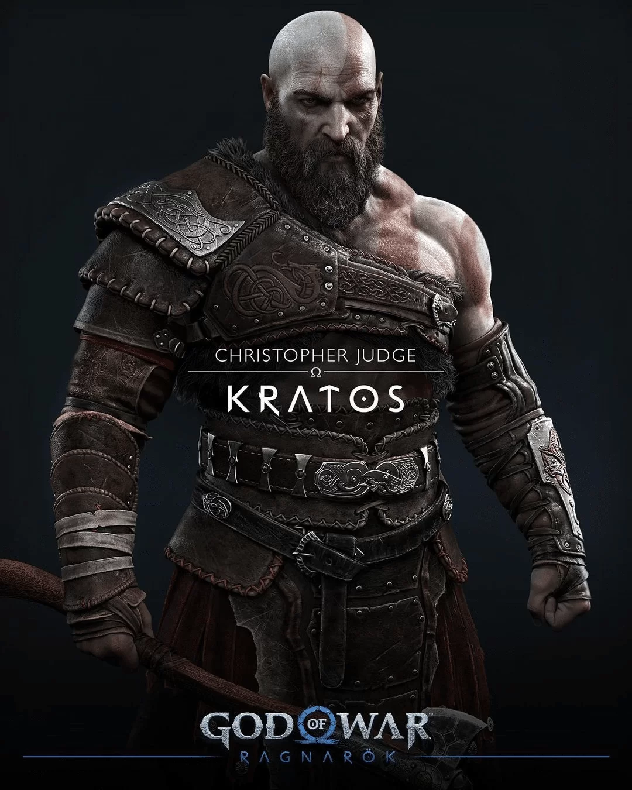
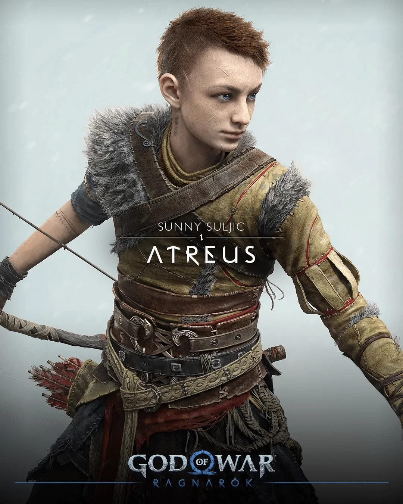
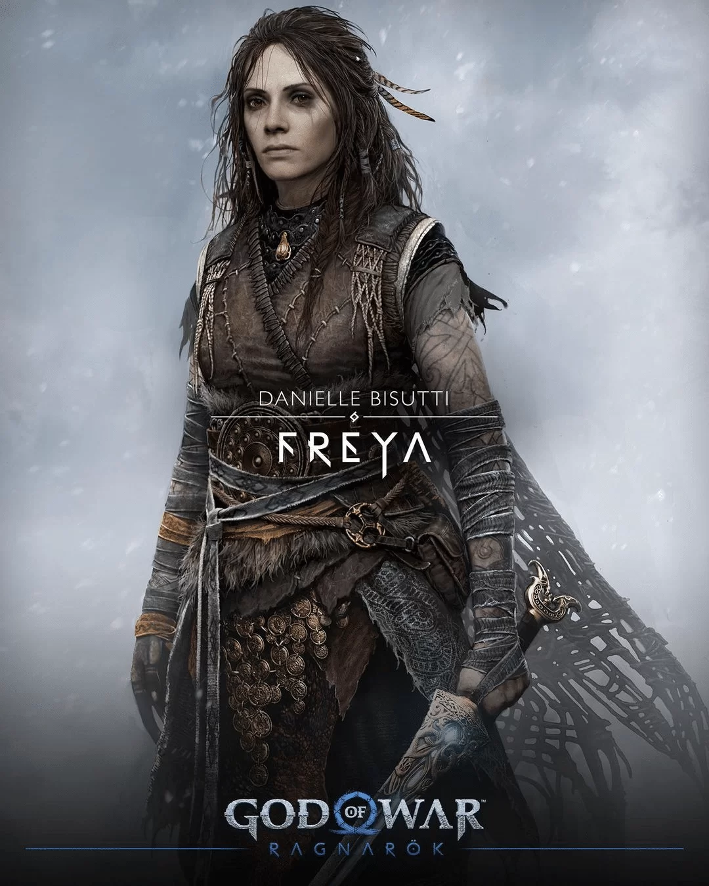
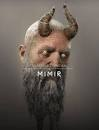
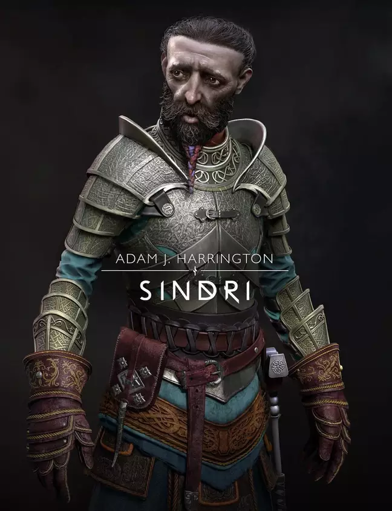

Personagens
Kratos — Ricardo Juarez

Ricardo Juarez, de 50 anos, segue como responsável pelo protagonista da franquia, Kratos, e pela célebre palavra “GAROTO!”. O dublador é altamente conceituado no setor e possui
uma extensa lista de importantes papéis em sua carreira, como Johnny Bravo, Liam Neeson em Hellboy e como o narrador do anime Black Clover.
Nos games, além do deus da guerra, Juarez atuou como Pinguim em Batman: Arkham Origins, Hellboy em Injustice e Zenyatta em Overwatch. Outra curiosidade é a sua participação
como voz de chamada para o toque de cinco segundos na TV Globo. Além disso, seus trabalhos incluem propagandas e vídeos institucionais.
Atreus — Lipe Volpato

Luiz Felipe Volpato Santos, conhecido como Lipe Volpato, tem apenas 20 anos, mas já possui uma carreira consolida como dublador, com destaque para Atreus, filho de Kratos. Ele
é a voz de Itzan Escamilla (Samuel García) na série espanhola Elite, Izuku Midoriya (My Hero Academia), Kōichi Shindō (Horimiya), Kid Emperor (One Punch Man) e Chuck (Concrete
Genie).
Freya — Beatriz Villa

A deusa Freya terá novamente Beatriz Villa (36 anos) no elenco de dubladores de God of War Ragnarok no Brasil. Ela possui muita experiência na área de games ao dar voz à Viúva
Negra em Lego Marvel Vingadores, Mei Terumi em Naruto Shippuden: Ultimate Ninja Storm 4, Lahni Kaliso em Gears 5 e Mãe Miranda em Resident Evil Village.
Além disso, Villa participou de filmes — A Irmandade (Jasmine) e American Pie: A Primeira Vez é Inesquecível (mãe da Vicky) e séries — The Walking Dead (Paula), Gotham
(Renee Montoya) e This is Us (Kate Pearson).
Mimir — Milton Levy

Apesar de alguns estranharem a voz de Mimir no trailer, Milton Levy seguirá como o personagem no elenco de dubladores de God of War Ragnarok no Brasil. O mais velho da lista
(70 anos), ele se destacou mais como ator em toda sua carreira. Já participou de novelas como Pícara Sonhadora, Canavial de Paixões, Éramos Seis, A Pequena Travessa, História de Ester, Tiro e Queda e Canoa do Bagre.
Além disso, trabalhou na série do Globoplay (Amor de de 4+1) e da Discovery (Confissões Médicas). Seu currículo ainda conta com trabalhos de apresentador em Programa Acesso
(CNT/Gazeta) e Clube Irmão Caminhoneiro Shell (SBT/Bandeirantes).
Brok — Mauro Castro

Mauro Castro, de 60 anos, continua como a voz de Brok na sequência do “GOTY” de 2018. O seu histórico na profissão é mais associado aos animes: Dragon Ball Z (Rei Vegeta),
Cowboy Bebop (Donnelly), One Piece (Dorry), Shaman King (Tokagero “Lagartixa”), Bleach (Yoruichi Gato) e Dragon Ball Z: Gohan e Trunks – Os Guerreiros do Futuro
(Mestre Kame).
Sindri — Marcelo Salsicha

Irmão de Brok, Sindri também tem o seu dublador original de God of War (2018): Marcelo Caodaglio, de 39 anos, conhecido como Marcelo Salsicha. O profissional possui o maior currículo de
trabalhos em videogames. Ele participou de Ratchet & Clank: Em Uma Outra Dimensão (Skidd McMarx/Fantasma), Horizon Zero Dawn (Travis Tate), Death Stranding (Jake Wind) e Mortal
Kombat 11 (Johnny Cage).
Caodaglio também esteve em papéis importantes na indústria de entretenimento: Rogue One – Uma História Star Wars (Almirante Raddus), O Rei Leão (Zazu), O Poço (Iván Massagué),
Aladdin (Jamal), Star Trek: Discovery (Riley Gilchrist), Valéria (Jorge Suquet) e O Alienista (Jefferson White).
Thor — Gabriel Noya

Gabriel Noya, de 33 anos, é a voz de Thor em God of War Ragnarok. O dublador tem um dos currículos mais impressionantes da lista. Recentemente, ele participou de papéis
como Eivor (Assassin’s Creed Valhalla) e Shang-Chi (Shang-Chi e a Lenda dos Dez Anéis).
Além disso, o profissional trabalhou como Lonnie Lincoln / Tombstone (Marvel’s Spider-Man), Sett (League of Legends), Björn (Vinland Saga), Tenya Iida (My Hero Academia),
Yasutora Sado (Bleach), Tenente Jeremy Foster (Outlander), Mark Hanna (O Lobo de Wall Street) e Tommy Ryan (Titanic).